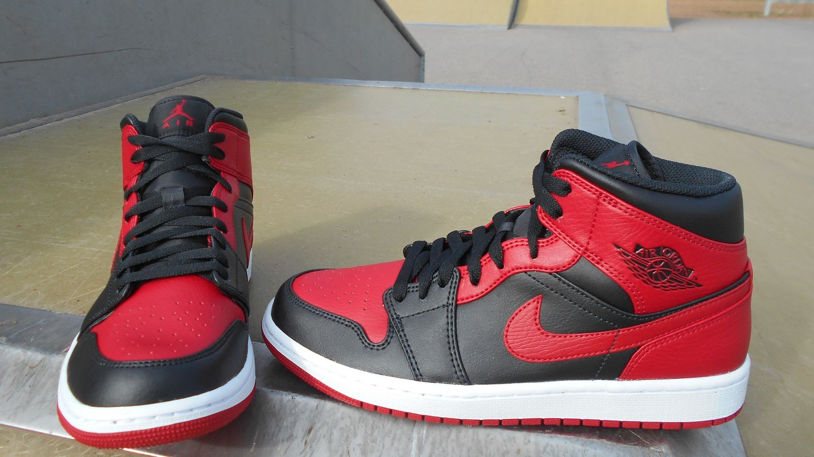

「禁止」が生んだ伝説 —— エア・ジョーダン1とルールの向こう側
1足のバスケットシューズが、40年経っても世界中で語り継がれている。エア・ジョーダン1。その伝説の始まりにあったのは、皮肉にもリーグの「規定」だった。

白いスニーカーの時代に、黒と赤で現れた
1984年、NBAにマイケル・ジョーダンという新人が現れたとき、コートの上のシューズはまだ「白が基本」の時代だった。当時のNBAにはユニフォームとの統一性を求める規定があり、チームカラーから外れた派手なシューズは認められにくかった。そこにナイキが用意したのが、黒と赤——シカゴ・ブルズの色をまとった大胆なカラーリングだ。
リーグはこのカラーリングを規定違反とし、履けば罰金という状況が生まれる。普通のブランドなら、ここで引き下がる。だがナイキは違った。「NBAが締め出したシューズ」という事実そのものを、広告に変えたのだ。
ルールに縛られない、という物語
「BANNED（禁止）」。この一語を掲げたキャンペーンは、シューズを単なる道具から「反骨の象徴」に変えた。買えば、あなたもルールの向こう側に立てる——そんなメッセージが、コートに立たない人々の心まで掴んだ。
ちなみに近年の検証では、実際に問題視されたのはエア・ジョーダン1ではなく、その前にジョーダンが履いていた別モデルだったという説が有力だ。しかし、それでいい。事実の細部よりも、「禁じられたから欲しくなる」という人間の性を突いた物語の設計こそが、このシューズを伝説にした本体なのだから。
プロダクトではなく、物語が人を動かす。エア・ジョーダン1は、スポーツマーケティングの原点として、今日もその証明であり続けている。